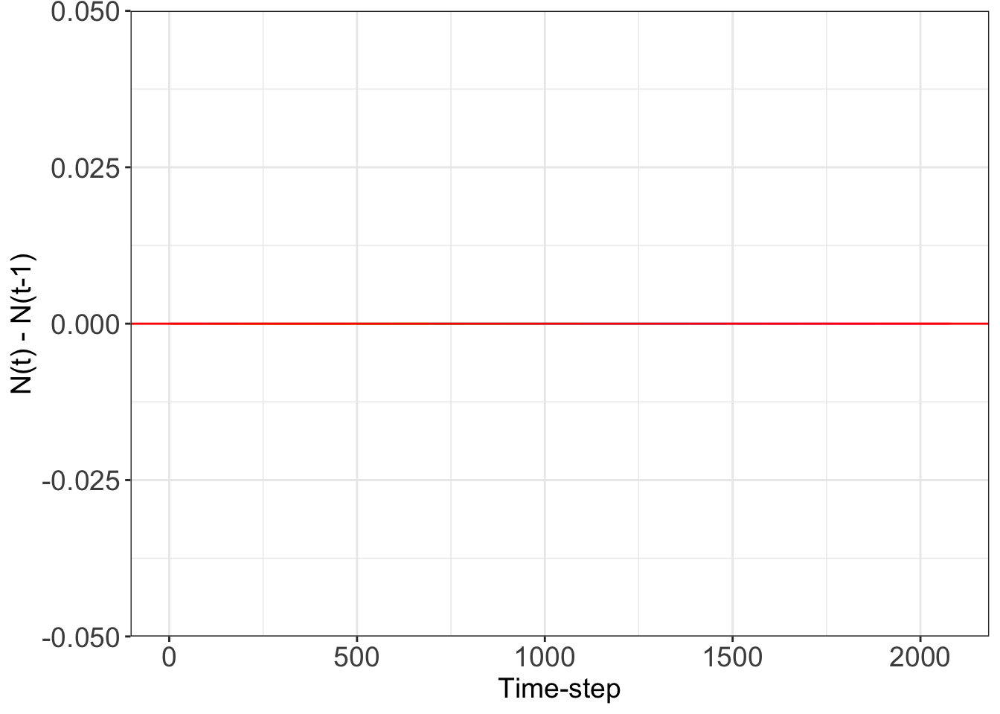
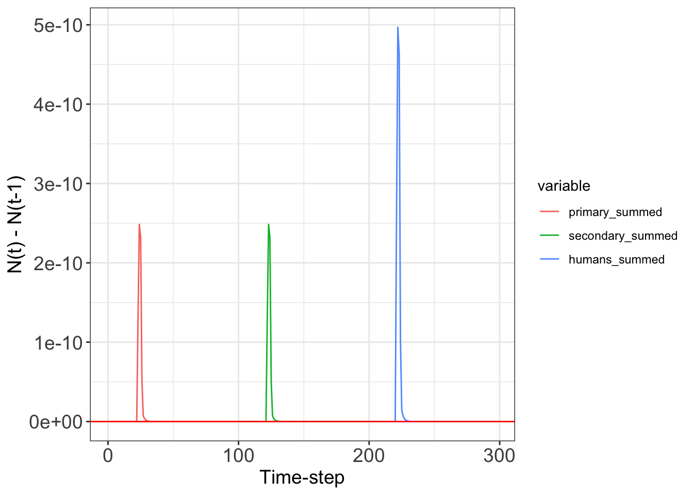
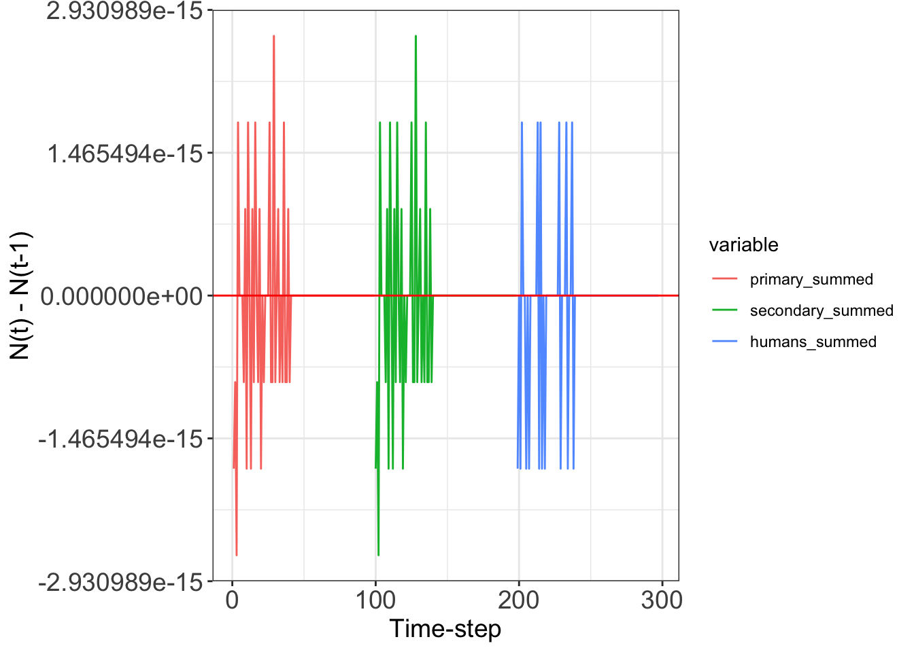

p_test_no_bdd <- c(
b_H = 0, # OFF- Human birth rate
b_P = 0, # OFF - P.vector birth rate
b_S = 0, # OFF - S. vector birth rate
mu_H = 0, # OFF - Human death rate
mu_P = 0, # OFF - P. vector death rate
mu_S = 0, # OFF - S. vector death rate
a_P = 0, # biting rate of the p. vector
a_S = 0, # biting rate of the s.vector
phi_P = 0.00008, # transmission probability of p. vector
phi_S = 0.00004, # transmission probability of s. vector
phi_H = 0.5, # transmission probability of human
# Recovery rate
gamma = 0, # recovery rate of infected human
# competition coefficient
c_PS = 0, # OFF- competitition effect of p on s.vector
c_SP = 0, # OFF- competitition effect of s on p.vector
a_max = 0.0, # OFF
k = 1e-2,
a_0 = 2500,
lambda = 0
)Proof of test
Turning off birth/death/dispersal/infection for all groups
Note that we turned off human and vector per capita birth rate, the mortality rate, and all infection rate. . When you subtract the population at a patch j at time t with the population at t-1, you should get 0. This is the simplest test.
The initial conditions are:
set.seed(248)
### The initial conditions
initial_y_test <- c(
HS = sample(seq(1, 10), 3, replace = TRUE),
HI = sample(seq(1, 10), 3, replace = TRUE),
HR = sample(seq(1, 10), 3, replace = TRUE),
PS = sample(seq(1, 10), 3, replace = TRUE),
PI = sample(seq(1, 10), 3, replace = TRUE),
SS = sample(seq(1, 10), 3, replace = TRUE),
SI = sample(seq(1, 10), 3, replace = TRUE)
)
### The initial conditions
initial_y_alt <- c(
HS = rep(1, 3, replace = TRUE),
HI = rep(1, 3, replace = TRUE),
HR = rep(1, 3, replace = TRUE),
PS = rep(1, 3, replace = TRUE),
PI = rep(1, 3, replace = TRUE),
SS = rep(1, 3, replace = TRUE),
SI = rep(1, 3, replace = TRUE)
)
states = c(5,0.01,0.01)
initial_y_alt2 <- c(
HS = states ,
HI = states ,
HR = states ,
PS = states ,
PI = states ,
SS = states ,
SI = states
)Here, is the simulated network:
adjacency_matrix_test <- simulate_final_adjacency_matrix(
24601, 3,
0.32, 20
)
graph_test <- graph_from_adjacency_matrix(adjacency_matrix_test,
weighted = TRUE,
mode = "plus", diag = FALSE
)
degree_vec_test <- degree(graph_test)results_no_bdd_0 <- data.frame(ode(
times = seq(1, 100, 1),
y = initial_y_test,
func = model_ross_trito_metapopulation,
parms = p_test_no_bdd,
patch_num = 3,
adj_matrix = adjacency_matrix_test,
degree_vec = degree_vec_test
))Here, I create a function to plot out the patches:
check_0 <- function(column_data) {
ifelse(any(column_data == 0) == "TRUE", "OK!", "WARNING")
}
diff_test_1 <- function(result) {
diff_result <- apply(result[, 2:ncol(result)], 2, diff)
melted_2 <- melt(diff_result)
return(list(diff_result, melted_2))
}ggplot(diff_test_1(results_no_bdd_0)[[2]], aes(
x = seq(1, nrow(diff_test_1(results_no_bdd_0)[[2]])),
y = value,
color = Var2
)) +
geom_line() +
geom_hline(yintercept = 0, col = "red") +
theme_bw() +
xlab("Time-step") +
ylab("N(t) - N(t-1)") +
theme(
legend.position = "none",
axis.text = element_text(size = 14),
axis.title = element_text(size = 14)
)
You should see a pure red-line, nothing else! Everything should be 0.
verbal_check <- apply(diff_test_1(results_no_bdd_0)[[1]], 2, check_0)
ifelse(any(verbal_check != "OK!") == "FALSE", "YOU'RE FINE!", "STOP!") # FALSE means[1] "YOU'RE FINE!"Turning on birth and death and they are equal to each other
We turn off the human and vector per capita birth rate and the mortality rate. The infection is turned off. . When you add the total subpopulations (susceptible, infected, recovered) population at a patch j at time t with the population at t-1, you should get 0. Though this is only true if the birth and mortality rates are the SAME!
p_test_no_id <- c(
b_H = 1, # Human birth rate
b_P = 1, # P.vector birth rate
b_S = 1, # S. vector birth rate
mu_H = 1, # Human death rate
mu_P =1, # P. vector death rate
mu_S = 1, # S. vector death rate
a_P = 0.0, # biting rate of the p. vector
a_S = 0.0, # biting rate of the s.vector
phi_P = 0.0, # transmission probability of p. vector
phi_S = 0.0, # transmission probability of s. vector
phi_H = 0.0, # transmission probability of human
# Recovery rate
gamma = 0.0, # recovery rate of infected human
# competition coefficient
c_PS = 0.0, # OFF- competitition effect of p on s.vector
c_SP = 0.0, # OFF- competitition effect of s on p.vector
a_max =0.01, # OFF
k = 1e-2,
a_0 = 2500,
lambda = 0
)results_no_id_0 <- data.frame(ode(
times = seq(1, 100, 1),
y = initial_y_alt,
func = model_ross_trito_metapopulation,
parms = p_test_no_id,
patch_num = 3,
adj_matrix = adjacency_matrix_test,
degree_vec = degree_vec_test,
method = 'lsodar',
atol = 1e-8, rtol = 1e-8
))aggregate_subpopulations <- function(results){
primary_all <- results [ , grepl("PS", names(results)) |
grepl( "PI", names(results))]
secondary_all <- results [ , grepl("SS", names(results)) |
grepl( "SI", names(results))]
human_all<- results [ , grepl("HS", names(results)) |
grepl( "HI", names(results)) |
grepl( "HR", names(results))]
primary_summed <- rowSums(primary_all)
secondary_summed <- rowSums(secondary_all)
humans_summed <- rowSums(human_all)
full_df <- cbind(primary_summed , secondary_summed, humans_summed )
diff(humans_summed)
diff_result <- data.frame(apply(full_df[, 1:ncol( full_df )], 2, diff))
full_df_melted <- melt(
diff_result )
return(list(full_df, full_df_melted))
}A slight numerical accuracy problem but it’s very small 1e-10
ggplot(aggregate_subpopulations(results_no_id_0)[[2]],
aes(
x = seq(1, nrow(aggregate_subpopulations(results_no_id_0)[[2]])),
y = value,
color = variable
)) +
geom_line() +
geom_hline(yintercept = 0, col = "red") +
theme_bw() +
xlab("Time-step") +
ylab("N(t) - N(t-1)") +
theme(
axis.text = element_text(size = 14),
axis.title = element_text(size = 14)
)No id variables; using all as measure variables
No id variables; using all as measure variables
Turning on infection
We turn off the human and vector per capita birth rate and the mortality rate. The infection processes is turned on. . When you add the total subpopulations (susceptible, infected, recovered) population at a patch j at time t with the population at t-1, you should get 0. Though this is only true if the birth and mortality rates are the SAME!
p_inf_only <- c(
b_H = 0, # Human birth rate
b_P = 0, # P.vector birth rate
b_S = 0, # S. vector birth rate
mu_H = 0, # Human death rate
mu_P =0, # P. vector death rate
mu_S = 0, # S. vector death rate
a_P = 1, # biting rate of the p. vector
a_S = 1, # biting rate of the s.vector
phi_P = 1, # transmission probability of p. vector
phi_S = 1, # transmission probability of s. vector
phi_H = 1, # transmission probability of human
# Recovery rate
gamma = 1, # recovery rate of infected human
# competition coefficient
c_PS = 0.0, # OFF- competitition effect of p on s.vector
c_SP = 0.0, # OFF- competitition effect of s on p.vector
a_max = 0.0, # OFF
k = 1e-2,
a_0 = 2500,
lambda = 0
)results_inf_only <- data.frame(ode(
times = seq(1, 100, 1),
y = initial_y_alt,
func = model_ross_trito_metapopulation,
parms = p_inf_only ,
patch_num = 3,
adj_matrix = adjacency_matrix_test,
degree_vec = degree_vec_test,
method = 'lsodar',
atol = 1e-8, rtol = 1e-8
))aggregate_subpopulations(results_inf_only)[[1]]No id variables; using all as measure variables primary_summed secondary_summed humans_summed
[1,] 6 6 9
[2,] 6 6 9
[3,] 6 6 9
[4,] 6 6 9
[5,] 6 6 9
[6,] 6 6 9
[7,] 6 6 9
[8,] 6 6 9
[9,] 6 6 9
[10,] 6 6 9
[11,] 6 6 9
[12,] 6 6 9
[13,] 6 6 9
[14,] 6 6 9
[15,] 6 6 9
[16,] 6 6 9
[17,] 6 6 9
[18,] 6 6 9
[19,] 6 6 9
[20,] 6 6 9
[21,] 6 6 9
[22,] 6 6 9
[23,] 6 6 9
[24,] 6 6 9
[25,] 6 6 9
[26,] 6 6 9
[27,] 6 6 9
[28,] 6 6 9
[29,] 6 6 9
[30,] 6 6 9
[31,] 6 6 9
[32,] 6 6 9
[33,] 6 6 9
[34,] 6 6 9
[35,] 6 6 9
[36,] 6 6 9
[37,] 6 6 9
[38,] 6 6 9
[39,] 6 6 9
[40,] 6 6 9
[41,] 6 6 9
[42,] 6 6 9
[43,] 6 6 9
[44,] 6 6 9
[45,] 6 6 9
[46,] 6 6 9
[47,] 6 6 9
[48,] 6 6 9
[49,] 6 6 9
[50,] 6 6 9
[51,] 6 6 9
[52,] 6 6 9
[53,] 6 6 9
[54,] 6 6 9
[55,] 6 6 9
[56,] 6 6 9
[57,] 6 6 9
[58,] 6 6 9
[59,] 6 6 9
[60,] 6 6 9
[61,] 6 6 9
[62,] 6 6 9
[63,] 6 6 9
[64,] 6 6 9
[65,] 6 6 9
[66,] 6 6 9
[67,] 6 6 9
[68,] 6 6 9
[69,] 6 6 9
[70,] 6 6 9
[71,] 6 6 9
[72,] 6 6 9
[73,] 6 6 9
[74,] 6 6 9
[75,] 6 6 9
[76,] 6 6 9
[77,] 6 6 9
[78,] 6 6 9
[79,] 6 6 9
[80,] 6 6 9
[81,] 6 6 9
[82,] 6 6 9
[83,] 6 6 9
[84,] 6 6 9
[85,] 6 6 9
[86,] 6 6 9
[87,] 6 6 9
[88,] 6 6 9
[89,] 6 6 9
[90,] 6 6 9
[91,] 6 6 9
[92,] 6 6 9
[93,] 6 6 9
[94,] 6 6 9
[95,] 6 6 9
[96,] 6 6 9
[97,] 6 6 9
[98,] 6 6 9
[99,] 6 6 9
[100,] 6 6 9A slight numerical accuracy problem but it’s very small 1e-10
ggplot(aggregate_subpopulations(results_inf_only)[[2]],
aes(
x = seq(1, nrow(aggregate_subpopulations(results_inf_only)[[2]])),
y = value,
color = variable
)) +
geom_line() +
geom_hline(yintercept = 0, col = "red") +
theme_bw() +
xlab("Time-step") +
ylab("N(t) - N(t-1)") +
theme(
axis.text = element_text(size = 14),
axis.title = element_text(size = 14)
)No id variables; using all as measure variables
No id variables; using all as measure variables
###Turning on dispersal only
We turn off the human and vector per capita birth rate and the mortality rate. The infection processes is turned off. . When you add the total subpopulations (susceptible, infected, recovered) population at a patch j at time t with the population at t-1, you should get 0. Though this is only true if the birth and mortality rates are the SAME!
p_disp_only <- c(
b_H = 0, # Human birth rate
b_P = 0, # P.vector birth rate
b_S = 0, # S. vector birth rate
mu_H = 0, # Human death rate
mu_P =0, # P. vector death rate
mu_S = 0, # S. vector death rate
a_P = 0, # biting rate of the p. vector
a_S = 0, # biting rate of the s.vector
phi_P = 0, # transmission probability of p. vector
phi_S = 0, # transmission probability of s. vector
phi_H = 0, # transmission probability of human
# Recovery rate
gamma = 0, # recovery rate of infected human
# competition coefficient
c_PS = 0.0, # OFF- competitition effect of p on s.vector
c_SP = 0.0, # OFF- competitition effect of s on p.vector
a_max = 10, # OFF
k = 1e-2,
a_0 =3,
lambda = 0.05
)results_dispersal_only <- data.frame(ode(
times = seq(1, 3, 0.1),
y = initial_y_alt2,
func = model_ross_trito_metapopulation,
parms = p_disp_only ,
patch_num = 3,
adj_matrix = adjacency_matrix_test,
degree_vec = degree_vec_test,
method = 'lsodar',
atol = 1e-8, rtol = 1e-8
))primary_s <- results_dispersal_only [ , grepl("PS", names(results_dispersal_only))]
primary_summed <- rowSums( primary_s); primary_summed [1] 5.02 5.02 5.02 5.02 5.02 5.02 5.02 5.02 5.02 5.02 5.02 5.02 5.02 5.02 5.02
[16] 5.02 5.02 5.02 5.02 5.02 5.02 primary_i <- results_dispersal_only[ , grepl("PI", names( results_dispersal_only))]
primary_i_summed <- rowSums( primary_i); primary_i_summed [1] 5.02 5.02 5.02 5.02 5.02 5.02 5.02 5.02 5.02 5.02 5.02 5.02 5.02 5.02 5.02
[16] 5.02 5.02 5.02 5.02 5.02 5.02 secondary_s <- results_dispersal_only [ , grepl("SS", names(results_dispersal_only ))]
secondary_s_summed <- rowSums( secondary_s); secondary_s_summed [1] 5.02 5.02 5.02 5.02 5.02 5.02 5.02 5.02 5.02 5.02 5.02 5.02 5.02 5.02 5.02
[16] 5.02 5.02 5.02 5.02 5.02 5.02 secondary_i <-results_dispersal_only[ , grepl("SI", names(results_dispersal_only))]
secondary_i_summed <- rowSums( secondary_i); secondary_i_summed [1] 5.02 5.02 5.02 5.02 5.02 5.02 5.02 5.02 5.02 5.02 5.02 5.02 5.02 5.02 5.02
[16] 5.02 5.02 5.02 5.02 5.02 5.02aggregate_subpopulations_finetune <- function(results){
primary_s <- results_dispersal_only [ , grepl("PS", names(results_dispersal_only))]
primary_summed <- rowSums( primary_s); primary_summed
primary_i <- results_dispersal_only[ , grepl("PI", names( results_dispersal_only))]
primary_i_summed <- rowSums( primary_i); primary_i_summed
secondary_s <- results_dispersal_only [ , grepl("SS", names(results_dispersal_only ))]
secondary_s_summed <- rowSums( secondary_s); secondary_s_summed
secondary_i <-results_dispersal_only[ , grepl("SI", names(results_dispersal_only))]
secondary_i_summed <- rowSums( secondary_i); secondary_i_summed
secondary_summed <- rowSums(secondary_all)
humans_summed <- rowSums(human_all)
full_df <- cbind(primary_summed , secondary_summed, humans_summed )
diff(humans_summed)
diff_result <- data.frame(apply(full_df[, 1:ncol( full_df )], 2, diff))
full_df_melted <- melt(
diff_result )
return(list(full_df, full_df_melted))
}